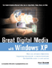
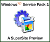

| |
Buy the Book
Windows
XP Home Networking is aimed at beginning and intermediate users
wishing to take advantage of two or more PCs in their homes.
Buy it now!
Also: Windows XP Digital
Media
My
other Windows XP book, Great Digital Media with Windows,
explores some of the exciting music, video, and photo tasks you
can only experience with Windows XP.
Check out this book too!
About Paul
Paul Thurrott is a widely recognized Windows expert who reaches
over 1 million readers each month through his many email, Web,
and print-based publications. Find out more
about Paul! |
|
This is where
it all comes together!
Windows XP
Home Networking gives you everything you need to set up an
Internet connection that can be safely and securely shared with
other PCs and devices in your home. Yes, Home Networking is
cool--especially wireless networking--and if you set it up
right, you'll wonder how you ever got along without it. In that
way, it's kind of like indoor plumbing, or electricity.
Find out why I wrote this book!
Why
Windows XP?
Windows
XP is the first truly great operating system from Microsoft,
with integrated and leading-edge support for digital media and
home networking. For the first time, XP makes it possible for
mere mortals to set up a home network and start sharing
resources immediately, safe from outside attack. Windows XP
Home Networking shows you how!
Networking Isn't Just for Geeks Anymore
Worried
that you need a rocket scientist or teenager on hand to get your
home network started? Worry no more: Windows XP Home
Networking shows you how to set up wired and wireless
networks, make and share modem- and broadband-based Internet
connections, and all the technical gobblygook you need so you
can start getting more out of your PCs. It's safe, fast, and
fun!
|
|
Beyond the Book
Discover
the future on the
SuperSite for Windows:Windows XP Service
Pack 1 Review

Windows XP Media
Center Edition ("Freestyle") Preview
Windows CE for Smart
Displays ("Mira") Preview
|
|